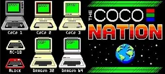

[Index]
The Coco Nation Game On News stories for Episode 301, February 18, 2023
===============================================================
Collected by L. Curtis Boyle
1) Jim Gerrie ported a type-in BASIC program originally by Esteban V. Aguilar
Jr, that was published in Compute! magazine's June 1983 issue called "Hawkmen
of Dindrin", to the MC-10:
https://youtu.be/zxZ4BePv13M
He also ported "Gin Rummy" originally by Manhattan Software in 1980 for the
TRS-80 Model 1/3:
https://youtu.be/eXdv0RRz7S4
2) Erico put up a video showing his work so far to enter the BASIC 10 liner
contest, a game called "It Came from The West". It explains the purpose of the
game, the screen layout and some sample play:
https://youtu.be/7uWoeCjNHLM
3) Chronologically Gaming covered some more early Coco games this past week:
4 in a row: Color Cubes, Color Invaders (Computerware), Color Space Invaders
(later Cosmic Invaders) (Spectral), Color Space Traders:
https://www.youtube.com/watch?v=jCgjfbm8SpE&t=1158s
Conflict (the 2nd game for the Coco by Soft Sector Marketing, after Animated
Hangman)
https://www.youtube.com/watch?v=xUlKQCYL3DM&t=489s